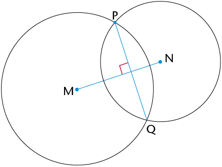
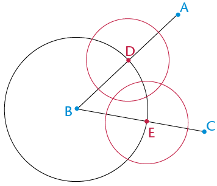
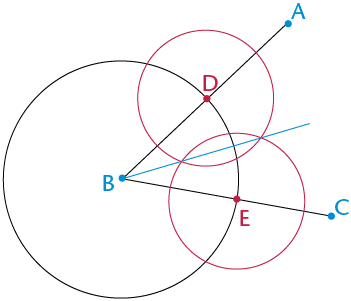

In hierdie hoofstuk sal jy die konstruksie van meetkundige figure, met slegs 'n passer en liniaal, hersien. Jy gaan die konstruksie van loodlyne, halveerlyne van hoeke asook spesiale hoeke hersien en verder ondersoek. Hierdie konstruksies help jou om meer konstruksies asook eienskappe van 2D-figure te verstaan. Jy sal ook die verbande tussen hoeke binne en buite 'n driehoek, sowel as kongruensie van driehoeke ondersoek. Laastens gaan jy meer uitvind oor die hoeklyne van vierhoeke en oor die binnehoeke van verskillende veelhoeke.
Jy het in Graad 8 oor loodlyne geleer.

Lees die inligting en instruksies en doen die konstruksie in jou oefeningboek.
|
Lynstuk MN met punt P op 'n afstand daarvan af word vir jou gegee. Jy moet 'n lyn konstrueer wat loodreg op MN is, sodat die loodlyn deur punt P gaan.
|
Stap 1 Gebruik jou passer om 'n sirkel te trek waarvan die middelpunt die een eindpunt van die lynstuk (N) is en deur punt (P) gaan.
|
|
Stap 2 Herhaal stap 1, maar maak die ander eindpunt van die lynstuk (M) die middelpunt van jou sirkel.
|
Stap 3 Verbind die punte waar die sirkels sny: PQ ⟂ MN  |
Lees die inligting en instruksies en doen die konstruksie in jou oefeningboek.
|
Lynstuk XY met punt Z daarop word vir jou gegee. Jy moet 'n loodlyn konstrueer wat deur Z gaan.
|
Stap 1 Gebruik jou passer om 'n sirkel met middelpunt Z te trek. Maak sy radius kleiner as ZX. Let op die twee punte waar die sirkel XY sny.
|
|
Stap 2 Stel jou passer wyer as wat dit was vir die sirkel met middelpunt Z. Trek twee ewe groot sirkels met middelpunte by die twee punte waar die eerste (swart) sirkel XY sny. Die twee sirkels (groen) sal oorvleuel.
|
Stap 3 Verbind die snypunte van die twee oorvleuelende sirkels. Merk hierdie punte C en D: CD ⟂ XY en gaan deur punt Z.
|
Trek in elk van die volgende twee gevalle 'n lyn wat loodreg op die lynstuk is en deur punt P gaan.


Werk deur die volgende voorbeeld waar twee snydende sirkels gebruik word om 'n hoek te halveer. Doen dan self die stappe in jou oefeningboek.
Om 'n hoek te halveer beteken om dit in twee ewe groot hoeke te verdeel.
|
\(\text{A}\hat{\text{B}}\text{C}\) word vir jou gegee. Jy moet die hoek halveer.
|
Stap 1 Trek 'n sirkel met
middelpunt B om sodoende gelyke lengtes op albei bene
van die hoek af te merk.
|
|
Stap 2 Trek twee ewe groot
sirkels met middelpunte by D  |
Stap 3 Trek 'n lyn van B af deur die punte waar die twee ewe groot sirkels sny. Hierdie lyn sal \(\text{A}\hat{\text{B}}\text{C}\) halveer.  |

Kan jy verduidelik waarom die metode hier bo werk om 'n hoek te halveer?
Kan jy ook sien dat ons nie volle sirkels hoef te teken nie, maar bloot dele van sirkels (boë) kan gebruik om die konstruksie hier bo te doen?
Halveer die hoeke hier onder sonder om 'n gradeboog te gebruik.

Hoeke van 30\(^\circ\), 45\(^\circ\), 60\(^\circ\) en 90\(^\circ\) staan bekend as spesiale hoeke. Jy moet hierdie hoeke kan konstrueer sonder om 'n gradeboog te gebruik.
Jy het geleer hoe om 'n hoek van 90\(^\circ\) te teken, en hoe om 'n hoek te halveer, sonder om 'n gradeboog te gebruik. Gebruik hierdie inligting om 'n hoek van 45\(^\circ\) te teken by punt X op die lynstuk hier onder.
Wenk: Verleng die lynstuk na die linkerkant van X.

Die tekening hier regs dien as ’n voorbeeld.


|
Angle |
Multiples below 360\(^\circ\) |
Angle |
Multiples below 360\(^\circ\) |
|
30\(^\circ\) |
30\(^\circ\); 60\(^\circ\); 90\(^\circ\); 120\(^\circ\); 150\(^\circ\); 180\(^\circ\); 210\(^\circ\); 240\(^\circ\); 270\(^\circ\); 300\(^\circ\); 330\(^\circ\) |
45\(^\circ\) |
|
|
60\(^\circ\) |
90\(^\circ\) |
120\(^\circ\)
135\(^\circ\)
270\(^\circ\)
240\(^\circ\)
150\(^\circ\)
You learnt how to bisect an angle in Section 10.2. Now you will investigate the angle bisectors in a triangle. An angle bisector is a line that cuts an angle in half.


You should have found that the three angle bisectors of a triangle intersect at one point. This point is the same distance away from each side of the triangle.
An interior angle is an angle that lies between two sides of a triangle. It is inside the triangle. A triangle has three interior angles.
An exterior angle is an angle between a side of a triangle and another side that is extended. It is outside the triangle.

Look at \(\triangle\)PQR. Its three sides are extended to create three exterior angles.
Each exterior angle has one interior adjacent angle (next to it) and two interior opposite angles, as described in the following table.

|
Exterior angle |
Interior adjacent angle |
Interior opposite angles |
|
1 |
x |
z and y |
|
2 |
y |
x and z |
|
3 |
z |
x and y |


|
Ext. \(\angle\) |
|||||
|
Int. opp. \(\angle\)s |


\(\text{L}\hat{\text{M}}\text{N} + \text{M}\hat{\text{L}}\text{N} = \)
The exterior angle of a triangle is equal to the sum of the interior opposite angles.


Two triangles are congruent if they have exactly the same shape and size: they are able to fit exactly on top of each other. This means that all three corresponding sides and three corresponding angles are equal, as shown in the following two pairs.
|
|
|
\(\triangle\)ABC \(\equiv\) \(\triangle\)DEF and \(\triangle\)GHI \(\equiv\) \(\triangle\)JKL. In each pair, the corresponding sides and angles are equal.
To determine whether two triangles are congruent, we need a certain number of measurements, but not all of these. Let's investigate which measurements give us only one possible triangle.
|
Step 1 Construct MN = 10 cm and the 50\(^\circ\) angle at M, even though you do not know the length of unknown side (MP).
|
Step 2
|
|
Step 3 Point P must be 8 cm from N and fall on the unknown side of the triangle. The arc intersects the third side at two points, so P can be at either point. So two triangles are possible, each meeting the conditions given, i.e. MN = 10 cm, NP = 8 cm and \(\hat{\text{M}}\) = 50\(^\circ\).  |
|
|
Conditions |
Congruent? |
|
3 sides (SSS) |
|
|
2 sides (SS) |
|
|
3 angles (AAA) |
|
|
2 angles and a side (AAS) |
|
|
2 sides and an angle not between the sides (SSA) |
|
|
2 sides and an angle between the sides (SAS) |
|
|
Right-angled with the hypotenuse and a side (RHS) |
A diagonal is a straight line inside a figure that joins two vertices of the figure, where the vertices are not next to each other.
Below are two overlapping circles with centres A and B. The circles are the same size.
A perpendicular bisector is a line that cuts another line in half at a right angle (90\(^\circ\)).

Below are two overlapping circles with centres D and E. The circles are different sizes.


|
Quadrilateral |
Diagonals equal |
Diagonals bisect |
Diagonals meet at 90\(^\circ\) |
|
Parallelogram |
|||
|
Rectangle |
|||
|
Square |
|
No. of \(\triangle\)s |
2 |
||
|
Sum of \(\angle\)s |
\(2 \times 180^\circ = 360^\circ\) |
|
No. of \(\triangle\)s |
|||
|
Sum of \(\angle\)s |
|
(a) A quadrilateral that has diagonals that are perpendicular and they bisect each other |
Kite |
|
(b) A quadrilateral that has diagonals that are perpendicular to each other, and only one diagonal bisects the other |
Congruent |
|
(c) A quadrilateral that has equal diagonals that bisect each other |
Exterior angle |
|
(d) Figures that have exactly the same size and shape |
Rhombus |
|
(e) Divides into two equal parts |
Perpendicular |
|
(f) An angle that is formed outside a closed shape: it is between the side of the shape and a side that has been extended |
Bisect |
|
(g) Lines that intersect at 90 degrees |
Special angles |
|
(h) 90\(^\circ\), 45\(^\circ\), 30\(^\circ\), 60\(^\circ\) |
Rectangle |